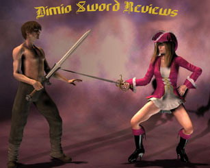

L'Atlantean di Albion
|
|
L'Atlantean di Albion |
|
Una spada degna di un eroe |
Recensione della spada più famosa della storia del cinema:
L'Atlantean, la spada di Conan!
 |
Il suo nome "Atlantean Sword" significa semplicemente: "Spada di Atlantide", infatti, nel primo film, Conan la rinviene nella tomba di Albione, re di Atlantide e da lì inizia la sua storia.
L'artefice di questa spada è Jody Samson, artista che ha progettato e costruito spade per svariati film (tra cui quello di Conan il Barbaro) e reso celebre proprio da questa spada che rimane a tutt'oggi la sua più famosa e importante opera.
 |
Esistono due versioni di questa spada:
L'originale, che appare nel primo film (Conan il Barbaro) e la versione modificata, che appare nel secondo (Conan il Distruttore).
Atlantean versione I (Barbarian)
 |
Atlantean versione II (Destroyer)
 |
Le due spade sono in realtà molto simili, ma, a mio parere, la Destroyer si configura come un perfezionamento del modello base (Barbarian) apparso nel primo film.
Le differenze sono:
1. La Destroyer ha un'impugnatura di un pollice più lunga, anche la lama è di un pollice più lunga (un pollice = 2.54cm).
2. Il ricasso è leggermente più largo e termina con un aspetto maggiormente uncinato.
3. Le rune sono incise più profondamente e sono colorate di scuro.
|
Le due versioni a confronto (In alto l'Atlantean Destroyer, sotto l'Atlantean prima versione).
|
I differenti colori sono dovuti al diverso grado di ossidazione del bronzo dell'elsa e del ricasso (appena forgiate, entrambe le spade hanno l'aspetto della prima). Dopo le considerazioni del caso, ho deciso di prendere la versione Destroyer soprattutto per le sue migliori doti di maneggevolezza rispetto alla Barbarian.
 |
Quale produttore scegliere? Marto o Albion?
Esistono solamente due produttori in tutto il mondo che possiedono la licenza per costruire questo tipo di spada, la Marto (spagnola) e la Albion (canadese). La prima costruisce delle riproduzioni fedeli a prezzo contenuto, ma unicamente a scopo decorativo, mentre la seconda si vanta di costruire delle spade "battle ready" (loro stessi le definiscono "fully functional") e in serie limitate di 1000 pezzi ciascuna.
Da un punto di vista estetico, le spade di Albion e di Marto sono abbastanza simili (la versione di Marto ha la lama più lucida mentre quella di Albion è più particolareggiata nelle finiture), ciononostante la vera differenza sta nei materiali utilizzati (acciaio 440 contro acciaio al carbonio, lega di zama contro bronzo...), nel trattamento termico e nel bilanciamento dell'arma.
Purtroppo non ho mai avuto l'occasione di impugnare la versione di Marto, per cui non posso fare paragoni basati sull'esperienza personale. In ogni caso, persone che le hanno avute in mano entrambe, sostengono che la differenza sia abbastanza palese.
Come probabilmente si era intuito, ho scelto la versione di Albion.
Atlantean con espositore a muro
 |
Caratteristiche tecniche
|
Atlantean come si presenta appena uscita dalla scatola di imballaggio
|
Tempi di consegna Queste spade vengono prodotte in serie limitata di 1000 pezzi in tutto il mondo e vengono forgiate su ordinazione, per cui, dal momento in cui viene posto l'ordine al momento in cui si riceve la spada possono passare anche diversi mesi, e così è stato (ordinata a gennaio e, anche per via di alcuni disguidi, arrivata in luglio). Confezione La spada si presenta in una scatola in legno di pino (bella anche se non proprio robustissima) con il marchio di Albion impresso a fuoco. Impugnatura L'impugnatura è realizzata in legno di betulla che, se da un lato garantisce una certa elasticità durante l'utilizzo, dall'altro risente poco dei cambiamenti climatici. La stessa è avvolta con un filo di cuoio trattato in maniera tale da aumentarne la resistenza, ciò garantisce una presa salda e sicura, ciononostante, con l'uso, il filo tende ad allentarsi e a svolgersi, tant'è che alla fine ho deciso di fissarlo incollandolo tramite una di quelle colle tipo la Bostik super-trasparente che ha dato ottimi risultati. Elsa e ricasso Entrambi sono realizzati in Bronzo forgiato in un unico blocco con gli stampi originali usati per il film. Le incisioni sono quindi identiche a quelle usate nel film. L'intento è quello di far apparire la spada antica, per questa ragione, lo stampo di bronzo ha tutta una piccola serie di imperfezioni che, pur dando l'effetto voluto, personalmente avrei preferito non vedere. In ogni caso si tratta di dettagli relativamente piccoli. Sul lato del ricasso è presente il numero di serie della spada n/1000 (dato che si tratta di una produzione limitata). Rune Le rune sono incise tramite gli stessi elettrodi utilizzati per incidere le rune nella spada originale e sono prive di significato. Nel film simboleggiavano una scritta con caratteri sconosciuti in una lingua morta (l'atlantideo). Sono realizzate perfettamente. Pomello Il pomello, in bronzo massiccio, come l'elsa, è fabbricato con lo stampo originale usato per la spada del film. E' realizzato senza alcun difetto oltre ad essere, ovviamente, identico all'originale. Lama La lama è solo apparentemente simile a quella del film. In realtà è molto diversa. La lama originale è realizzata in acciaio inox 440 temprato (adatto a spade cinematografiche o espositive, ma inadatto alla costruzione di una vera spada affilata da combattimento). Al contrario, la versione di Albion, è costruita in acciaio al carbonio AISI 1075 temprato a 56 HRC che la rende potenzialmente adatta ad uno scontro reale. (La definizione di "acciaio al carbonio" indica un acciaio costituito unicamente da ferro e carbonio senza altri metalli in lega, ciò conferisce resistenza e resilienza all'arma, la rende affilabile e adatta ad uno scontro reale. Tutte le spade costruite per scontri reali sono forgiate con questo tipo di acciaio). Analogamente, la lama nella versione originale non presenta un assottigliamento distale, ma mantiene, in ogni suo punto, il medesimo spessore. La versione di Albion invece presenta un assottigliamento distale del 50% che permette di bilanciare l'arma e di renderla manovrabile anche a chi non possieda il fisico di Conan. La lama non è lucidata a specchio, è levigata, ma con una leggera satinatura, esattamente come nel film. |
|
Atlantean dopo la pulizia dell'elsa in bronzo
|
|
Un fodero per l'Atlantean
Il fodero non era compreso con la spada per cui ho dovuto auto-costruirmelo ispirandomi al film. Ho utilizzato come supporto di base due copriscalini (simili a uno zerbino ma più sottili) che, tra tanti materiali provati, sono gli unici che hanno mostrato di possedere sia rigidità che elasticità associate ad un peso quasi nullo. Per unirli ho utilizzato colla siliconica e scotch per pacchi (che secondo me è una delle più grandi invenzioni dopo la ruota). Internamente sono stati rivestiti di ecopelle (so che non è l'ideale ma mia sorella non se l'è sentita di sacrificare la sua vecchia giacca di pelle all'altare di Conan).
Esternamente la copertura è fatta con pelle di volpe comprata per 15 euro al mercato (era la manica di una pelliccia). Per fissare la pelle ho usato due sistemi, il primo è una striscia di nastro biadesivo tra il fodero vero e proprio e la pelliccia allo scopo di impedirne lo scivolamento e il secondo sono i classici legacci che si vedono anche nel film.
Esteticamente il risultato mi sembra buono, e per adesso sembra anche solido, ma solo il tempo potrà dire se ho fatto un buon lavoro.
 |
|
Codolo Il codolo è un blocco unico con la lama, senza saldature che potrebbero cedere durante uno scontro, nella figura si può vedere il codolo dell'Atlantean messo a confronto con una spada con codolo fissato tramite saldatura.
Assemblaggio
Nell'assemblaggio la spada viene martellata a caldo e fissata in modo da impedire che balli dopo un utilizzo intensivo. Personalmente sospetto che si sia utilizzato del materiale gommoso (forse silicone) in alcuni punti per fissare alla perfezione la lama al ricasso e all'elsa e impedire ogni tipo di gioco conseguente all'utilizzo o a piccole imperfezioni nella forgiatura, ma è solo una mia congettura. Affilatura La lama non viene venduta affilata (se non su richiesta), il filo è abbastanza largo (1-2 mm) mentre la punta e i due ganci uncinati del ricasso possono rivaleggiare con la punta di una siringa. Ovviamente, trattandosi di una lama al carbonio, può essere affilata in qualsiasi momento senza grossi problemi, ma questa operazione tende a diminuirne il valore a lungo termine (o almeno così si dice in giro). Certificato di autenticità Insieme ad ogni spada è incluso un certificato di autenticità firmato, tra gli altri, anche da Jody Samson (artefice del modello originale) in cui viene indicato il numero di serie del pezzo e dove si certifica che la spada è stata creata utilizzando gli stessi stampi dell'originale. Prezzo Il prezzo di questa spada è di 2500 dollari (aggiornamento, ora addirittura 2700), è ovvio che costa decisamente tanto! Per via delle sue dimensioni, del suo peso e del suo prezzo, difficilmente qualcuno potrà pensare di scontrarla contro un'altra lama, per cui, il fatto che l'acciaio sia al carbonio non ha poi molta rilevanza pratica, ciononostante il suo valore è proprio lì, nel fatto di sapere di avere tra le mani una spada "reale" e non solo una pur bella decorazione da salotto. Inoltre il suo ottimo bilanciamento le permette di essere usata per delle forme e posso garantire che muovere in velocità quell'imponente artefatto dà soddisfazione. Aggiornamento Albion, per una serie di ragioni tra cui il fatto che la versione Barbarian (la più richiesta) ha ormai quasi raggiunto il limite delle 1000 unità vendute, ha deciso di non rinnovare la licenza per la costruzione delle spade della linea di Conan, per cui, dopo l'ottobre 2007, non sarà più possibile acquistare nessuna di queste spade! Questa è un'ottima notizia per coloro che sono riusciti ad accaparrarsene una in tempo utile, infatti è probabile che il proprio acquisto si apprezzerà dopo questa data. Le spade in circolazione, quindi, non saranno più le 1000 previste per ogni modello, questo vale per la Barbarian, ma soprattutto, per la Destroyer che è l'ultima ad essere stata riprodotta e messa in commercio. La mia è numerata come 31esima e difficilmente la quantità prodotta complessivamente potrà superare i 50 pezzi in tutto il mondo!!! |
|
|
Se poi si considera che desideravo quella spada fin da quando avevo 14 anni... |
 |
Dopo una lunghissima attesa, è finalmente arrivato il momento di stringerla tra le mani!
 |
Filmati
Purtroppo non ho ancora avuto modo di realizzare dei filmati in prima persona (spero di poterlo fare al più presto), in ogni caso questo è un filmato che mostra le doti di taglio dell'Atlantean (Barbarian) di Albion. E' interessante perchè, mostra come la spada, nonostante il suo peso, rimanga comunque più che utilizzabile anche da chi non abbia il fisico di Conan.
Quest'altro invece è preso direttamente dal film Conan il Distruttore e mostra l'Atlantean in movimento nella sua versione originale.
 |
Prova sul campo
L'Atlantean è una spada decisamente pesante.
Ha più o meno le dimensioni di una mano e mezza un pò corta, ma pesa il doppio (quasi 4kg) rispetto al massimo consentito per un utilizzo efficace (le mano e mezze, normalmente, hanno un peso che varia tra 1 e 2 kg).
Nonostante ciò, è evidente che gli armaioli di Albion hanno fatto veramente tutto il possibile per rendere l'arma maneggevole, basta prenderla in mano per rendersene conto. Il baricentro è collocato a un paio di centimetri dall'elsa e ciò garantisce un ottimo bilanciamento statico. Nella dinamica il peso si fa sentire, ma la spada rimane comunque controllabile. Anche senza avere una muscolatura particolarmente sviluppata è possibile far roteare in velocità la spada con presa dritta e riversa (tipo Schwarzenegger).
 |
Sia da ferma che in movimento, dà una sensazione particolare di solidità e potenza che lascia facilmente immaginare i danni che potrebbe arrecare un colpo inferto con essa. L'impressione è che, affilata o meno, sia in grado di aprire un cranio in due.
Negli affondi il movimento è relativamente lento, ma devastante, grazie alla sua notevole massa penetra il legno senza difficoltà.
Nel rotearla, per sbaglio ho colpito l'infisso della finestra che ha riportato danni notevoli, la spada, ovviamente, non ne ha riportato alcuno.
Infine, un'ultima dimostrazione dell'ottimo bilanciamento della spada di Albion: una foto di mia nonna Gloria di 94 anni (reali) con l'Atlantean in pugno pronta ad affettare le zucchine!
 with Atlantean Destroyer Conan Sword.jpg) |
|  |
|
||||||
 |